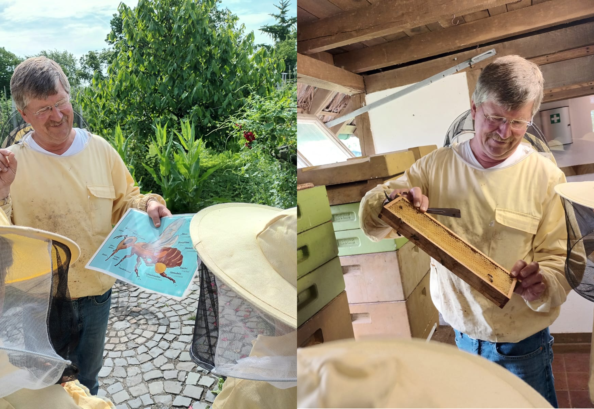
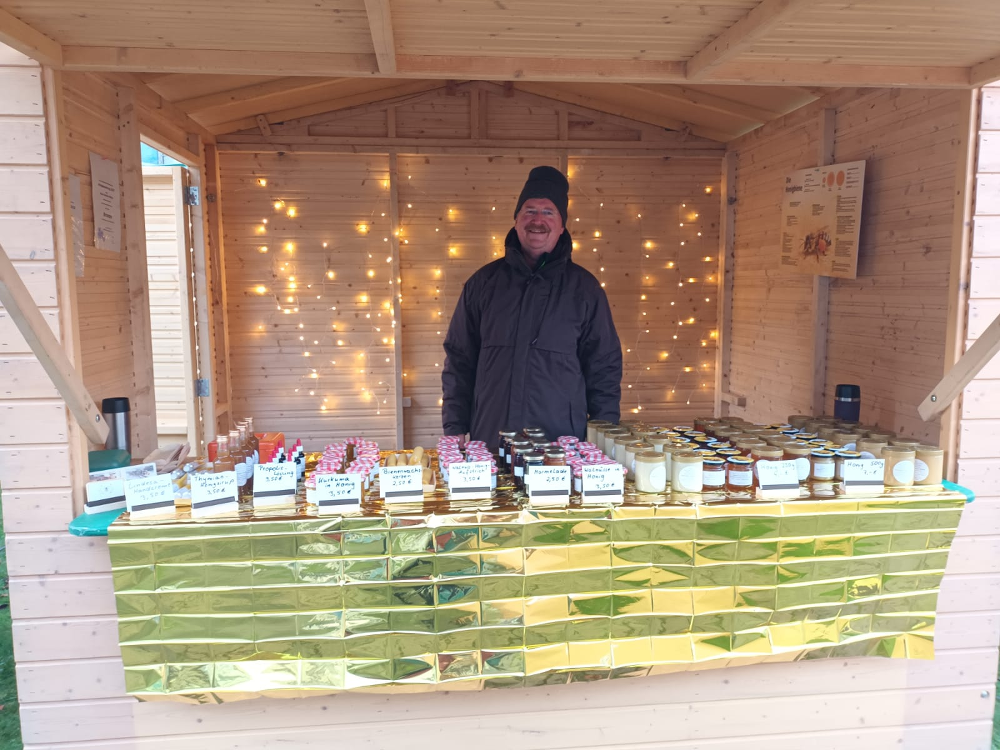
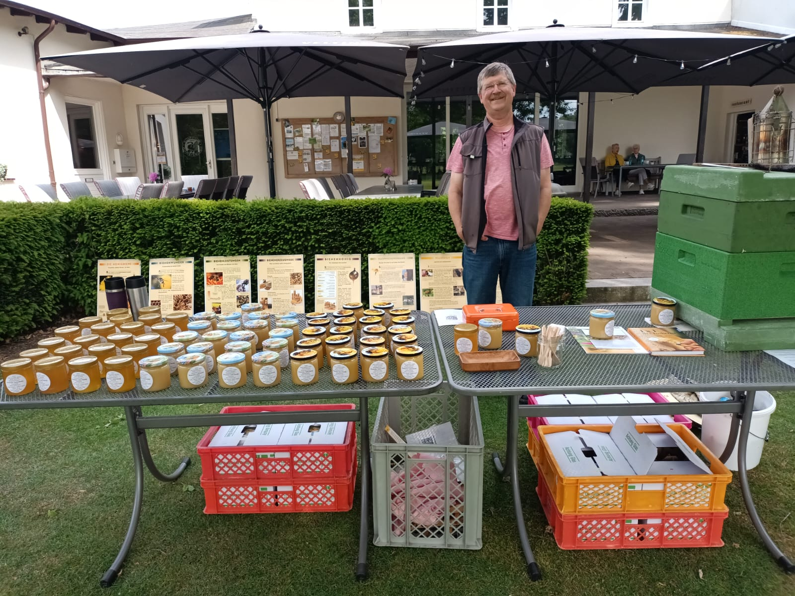

Imkerei Hans-Joachim Bühne
Deutscher Honig aus dem Münsterland
Über unseren Honig

Unsere Imkerei Bühne hat sich der Produktion von hochwertigem, natürlichem Honig verschrieben. Mit jahrelanger Erfahrung und Leidenschaft kümmern wir uns um unsere Bienenvölker und produzieren Honig in bester Qualität – direkt aus Steinfurt im Herzen des Münsterlands.
Jeder Tropfen Honig von Imkerei Bühne ist ein Produkt der Natur, ohne künstliche Zusätze oder Verarbeitung. Unser Honig aus dem Münsterland steht für Regionalität, sorgfältige Handarbeit und echten Geschmack. Die enge Verbundenheit zur Natur und die Liebe zur Imkerei machen unseren Honig zu etwas Besonderem.
Mit Leidenschaft und Fachkompetenz kümmern wir uns um unsere Bienen. Jedes Jahr setzen wir alles daran, um Honig aus dem Münsterland in bester Qualität zu erzeugen. Gleichzeitig laden wir herzlich dazu ein, die Welt der Imkerei vor Ort in Steinfurt kennenzulernen und sich rund um Bienen, Honig und Naturwissen zu informieren.
Die Imkerei ist für uns nicht nur ein Beruf, sondern eine Berufung. Wir freuen uns, unser Wissen und unsere Erfahrung zu teilen und hochwertige, regionale Produkte anzubieten.

Aus dem Bienenstock

Blütenhonig
Der klassische Blütenhonig mit zartem, süßem Geschmack. Er eignet sich hervorragend zum Süßen von Tee und anderen Getränken, als köstlicher Brotaufstrich sowie zum Verfeinern von Joghurt, Müsli und Desserts.

Feinkost
Aromatische Aufstriche und Sirupe aus der Imkerei – natürlich, fein und vielseitig.

Propolis (Bienenharz)
Kräftiges Propolis aus eigener Imkerei – Ein besonderes Bienenprodukt mit vielfältigen Verwendungsmöglichkeiten..

Bienenwachskerzen
Handgefertigte Bienenwachskerzen, die beim Abbrennen einen warmen, goldenen Lichtschein und einen dezenten, honigartigen Duft verströmen.
News

Tag der Artenvielfalt Steinfurt 2026
Beim Tag der Artenvielfalt im Kreislehrgarten Steinfurt drehte sich alles um das Zusammenspiel von Pflanzen, Tieren und ihren Lebensräumen. Als Imker vor Ort konnte Hans-Joachim Bühne den Kindern die wichtige Rolle der Honigbiene näherbringen. Im Imkeranzug erhielten die Kinder spannende Einblicke in das Leben der Honigbienen und erfuhren, welche wichtigen Aufgaben die fleißigen Bestäuber in der Natur übernehmen.

Erste Schleuderung der Saison
Die erste Schleuderung der Saison war ein voller Erfolg! Wir freuen uns über eine reiche Ernte und bedanken uns bei unseren treuen Kunden.

Wintermarkt Fachhochschule
Die Imkerei war mit einem Stand auf dem Wintermarkt der FH Münster am Technologie-Campus Steinfurt vertreten, wo Wissenschaft und weihnachtliche Atmosphäre auf besondere Weise zusammenkamen.

Ein Tag für die Bienen
Die Imkerei stellte am 21.05.2025 im Golfclub Münsterland im Rahmen eines Herrennachmittags die Welt der Bienen und ihre Bedeutung für das Ökosystem vor. Durch Honigverkostungen und Gespräche wurde das Bewusstsein für den Schutz der Bienen gestärkt.
Kontaktieren Sie uns
Imkerei Bühne
Adresse: Wemhöferstiege 2, 48565 Steinfurt
Telefon: 0172-1987362
E-Mail: E-Mail laden...